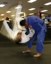

Daniel Morales
Rank: Nidan (2nd dan)
Member Since: 1989
With a strong wrestling background, Daniel began training in judo in 1989. As an undergraduate Daniel won
silver and bronze medals in the US Collegiate Nationals in 1992 and 1993, respectively. Daniel received his
black belt in 1994.
Daniel graduated from California State University, Fresno, with a BA in Sociology and a Master
of Science degree in Marriage and Family Therapy. He is currently a Mental Health Clinician providing
mental health services to children and adolescents.
Daniel recently won the 2008 California State Championships (Masters Division) after a 13-year break in competition.
Honors & Achievements:
- 3rd - 2009 World Masters Championships
- 1st - 2008 California State Championships
- 3rd - 1995 AAU Nationals
- 3rd - 1993 Collegiate Nationals (JC)
- 2nd - 1992 Collegiate Nationals (JC)